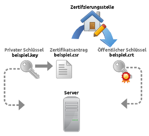
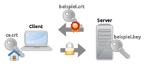
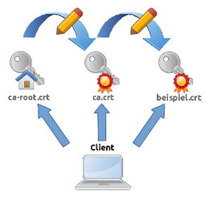

CA
Dieser Artikel wurde für die folgenden Ubuntu-Versionen getestet:
Ubuntu 17.10 Artful Aardvark
Ubuntu 16.04 Xenial Xerus
Ubuntu 14.04 Trusty Tahr
Artikel für fortgeschrittene Anwender
Dieser Artikel erfordert mehr Erfahrung im Umgang mit Linux und ist daher nur für fortgeschrittene Benutzer gedacht.
Zum Verständnis dieses Artikels sind folgende Seiten hilfreich:
 Eine "Certification Authority" (CA / Zertifizierungsstelle) ist eine Instanz, die digitale Zertifikate ausstellt und beglaubigt. Die "Kunden" einer CA lassen sich darüber ihre Server- oder Client-Zertifikate kryptografisch signieren und können damit nachweisen, dass sie derjenige sind, der sie zu sein vorgeben. Ubuntu bringt über das Paket ca-certificates eine ganze Reihe CA-Zertifikate seriöser CAs mit, die von Client-Programmen wie Webbrowsern benutzt werden, um die Identität von TLS-verschlüsselten Server-Diensten zu verifizieren. Schlägt diese Prüfung fehl, präsentiert das Client-Programm dem Benutzer eine Warnung. Grund genug für Anbieter öffentlich zugänglicher Dienste, ein signiertes Zertifikat dieser allgemein anerkannten Stellen zu erwerben.
Eine "Certification Authority" (CA / Zertifizierungsstelle) ist eine Instanz, die digitale Zertifikate ausstellt und beglaubigt. Die "Kunden" einer CA lassen sich darüber ihre Server- oder Client-Zertifikate kryptografisch signieren und können damit nachweisen, dass sie derjenige sind, der sie zu sein vorgeben. Ubuntu bringt über das Paket ca-certificates eine ganze Reihe CA-Zertifikate seriöser CAs mit, die von Client-Programmen wie Webbrowsern benutzt werden, um die Identität von TLS-verschlüsselten Server-Diensten zu verifizieren. Schlägt diese Prüfung fehl, präsentiert das Client-Programm dem Benutzer eine Warnung. Grund genug für Anbieter öffentlich zugänglicher Dienste, ein signiertes Zertifikat dieser allgemein anerkannten Stellen zu erwerben.
Obwohl es inzwischen kostenlose CA-Dienste gibt (siehe Links), möchte nicht jeder für seinen Heim- oder Firmenserver eine dieser öffentlichen Zertifizierungsstellen bemühen. Eine Möglichkeit wäre daher die Benutzung selbstsignierter Zertifikate, die ihre Signatur selbst erstellen und ohne jegliche CA auskommen. Solche selbstsignierten Zertifikate erzeugen allerdings eine Warnung, wenn ein Client das erste Mal diesen Dienst benutzt. Der Benutzer muss hier vorsichtig sein und selbst sicherstellen, dass das Zertifikat vertrauenswürdig ist.
Wer Dienste für einen größeren Personenkreis anbietet, z.B. in einem Firmen-Intranet, der möchte daher vielleicht eine eigene CA gründen. In diesem Fall muss man nur sein eigenes CA-Zertifikat auf allen potentiellen Clients installieren (oder zum Download anbieten, falls die Benutzer keine Computer-Laien sind) - und alle mit der CA signierten Dienste funktionieren ohne die Misstrauen erweckende Warnung. Der Benutzer muss nur noch dieser einen CA vertrauen, und nicht mehr jedes Zertifikat einzeln überprüfen.
Grundlagen¶
Generelle Funktionsweise von CAs¶
CAs sind wesentlicher Bestandteil einer PKI (Public-Key-Infrastruktur) und dienen dem Beglaubigen von Server- und Client-Zertifikaten. Ein Benutzer muss beispielsweise beim Browsen im Internet nicht vielen einzelnen Zertifikaten der jeweiligen Webseiteninhaber vertrauen, sondern nur einer geringeren Anzahl an allgemein anerkannten CAs. Ist die Signatur einer dieser CAs im Server-Zertifikat der Webseite enthalten, darf diesem Zertifikat vertraut werden. Der Browser baut dann eine TLS-verschlüsselte Verbindung zum Webserver auf. Webseiten, die TLS-Verschlüsselung unterstützen, erkennt man am Protokoll https am Anfang der Addresszeile.
Wie aber gelangt die Signatur ins Server-Zertifikat? Dazu muss der Webseitenbetreiber zunächst einen privaten Schlüssel im RSA-Format erstellen (übliche Dateiendung .key). Passend zum RSA-Key wird von ihm außerdem ein Zertifikatsantrag erstellt (übliche Dateiendung .csr für Certificate Signing Request).
Der Webseitenbetreiber hat jetzt zwei Dateien:
beispiel.key - Privater Schlüssel, der nicht weitergegeben werden darf (auch nicht an die CA) und vor fremden Zugriff geschützt werden muss.
beispiel.csr - Zertifikatsantrag ohne sensible Daten. Dort wird lediglich der Name des Webseitenbetreibers ("cn" - Common Name), seine Organisation und der Domänennname der Webseite eingetragen.
Der Zertifikatsantrag (beispiel.csr) wird jetzt zum Signieren an eine CA übergeben. Dies darf durchaus auf ungesichertem Weg geschehen, da beispiel.csr keine schützenswerten Daten enthält. Die CA muss allerdings sicherstellen, dass der Antragsteller auch wirklich für die Domäne im Zertifikatsantrag berechtigt ist. Aus diesem Grund werden öffentlich ausgestellte Zertifikate in mehrere Klassen unterteilt, je nach Umfang der Identitätsfeststellung des Antragstellers.
Die CA wiederum verfügt ebenfalls über zwei PKI-Dateien, die zum Signieren wichtig sind:
ca.key - Der private Schlüssel, mit dem der Zertifikatsantrag des Webseitenbetreibers in ein öffentliches Zertifikat umgewandelt wird (Signieren). Dieses öffentliche Zertifikat (beispiel.crt) enthält damit die Signatur der CA.
ca.crt - Der öffentliche Schlüssel der Zertifizierungsstelle wird für das Überprüfen der Signatur verwendet. Für das Signieren wird dieser Schlüssel nicht benötigt.
Details zum Signieren eines Zertifikatsantrags sind weiter unten beschrieben. Nach dem erfolgreichen Signieren schickt die CA das neue Webseitenzertifikat (beispiel.crt) an den Webseitenbetreiber zurück. Neben den Daten aus dem Zertifikatsantrag enthält die crt-Datei zusätzliche Informationen wie Gültigkeitszeitraum, Seriennummer, Einsatzzweck und natürlich die Signatur.
Der Webseitenbetreiber hat nun drei Dateien:
beispiel.key - privater Schlüssel
beispiel.csr - Zertifikatsantrag
beispiel.crt - öffentliches Zertifikat
Die Datei beispiel.csr wird nicht mehr benötigt. beispiel.crt und beispiel.key müssen auf dem Webserver abgelegt werden, je nach Server kann der Speicherort variieren. Das Hinterlegen des CA-Zertifikats ca.crt auf dem Webserver ist optional.

Ein Benutzer benötigt zum sicheren Browsen zwei Dateien:
ca.crt - Öffentliche Zertifikate aller verbreiteten CAs sind bei Ubuntu für Standardprogramme bereits vorinstalliert. Das Hinzufügen weiterer CAs ist weiter unten beschrieben.
beispiel.crt - Der Browser lädt das Webserver-Zertifikat automatisch von der besuchten Webseite herunter. Das TLS-Protokoll stellt dabei sicher, dass das Zertifikat nicht manipuliert wird.
Innerhalb des TLS-Handshakes überprüft der Webbrowser die Signatur in beispiel.crt auf Gültigkeit und benutzt dazu das CA-Zertifikat ca.crt. Dabei muss ca.crt lokal auf dem Client-System installiert sein. Ist alles in Ordnung, stellt der Browser eine endgültige verschlüsselte Verbindung zur Webseite her.

Intermediate Certificates¶
Anhand des vorherigen Beispiels wird schnell deutlich, dass der Austausch eines öffentlichen CA-Zertifikats ziemlich aufwändig ist:
In allen Browsern / Betriebssystemen muss das alte CA-Zertifikat gelöscht und das neue CA-Zertifikat installiert werden.
Alle bisher signierten Server-Zertifikate müssen von der Zertifizierungsstelle zurückgezogen und mit dem neuen CA-Zertifikat neu ausgestellt werden.
Alle Server-Betreiber müssen diese neu signierten Server-Zertifikate installieren.
Um diesen Aufwand soweit wie möglich zu vermeiden, haben CA-Zertifikate in der Regel einen sehr langen Gültigkeitszeitraum. Bei großen Zertifizierungsstellen kann dieser zwischen 20 und 30 Jahren liegen. Aus diesen langen Laufzeiten ergeben sich aber wiederum ganz andere Probleme. So ist es beispielsweise ziemlich wahrscheinlich, dass der eingesetzte Signaturalgorithmus zwischenzeitlich veraltet und nicht mehr sicher ist. Sieht man sich vorinstallierte CA-Zertifikate aus dem Paket ca-certificates an, wird dort häufig immer noch "sha1WithRSAEncryption" verwendet.
Als Lösung für dieses Problem verwenden Zertifizierungsstellen nicht direkt ihr CA-Zertifikat, sondern signieren damit erstmal nur ein oder mehrere untergeordnete CA-Zertifikate. Erst diese werden dann für das Signieren der eigentlichen Zertifikatsanträge verwendet.
CA-Zertifikate können demnach in folgende Kategorien unterteilt werden:
Root Certificates - dienen ausschließlich dem Signieren von Intermediate Certificates; werden häufig auch als Trust Anchor bezeichnet, da sie an oberster Stelle einer Zertifikatskette stehen
Intermediate Certificates - dienen dem Signieren der eigentlichen Zertifikatsanträge

Das Überprüfen der dadurch entstehenden Zertifikatsketten (Chain of trust) muss der Client übernehmen. Es ist daher wichtig, dass sowohl das Root Certificate als auch alle darunter liegenden Intermediate Certificates korrekt auf dem Client installiert sind. Alternativ ist es auch möglich, dass der Server die Intermediate Certificates zusammen mit dem Server-Zertifikat während des TLS-Handshakes zum Client sendet. In diesem Fall muss auf dem Client nur noch das Root Certificate fest installiert sein.
Das folgende Beispiel benutzt OpenSSL um die Zertifikatskette von https://wiki.ubuntuusers.de anzuzeigen.
openssl s_client -connect wiki.ubuntuusers.de:443 -servername wiki.ubuntuusers.de -verify 3
Man erhält folgende Ausgabe (ohne Zeilennummern):
... 1 CONNECTED(00000003) 2 depth=2 O = Digital Signature Trust Co., CN = DST Root CA X3 3 verify return:1 4 depth=1 C = US, O = Let's Encrypt, CN = Let's Encrypt Authority X3 5 verify return:1 6 depth=0 CN = ubuntuusers.de 7 verify return:1 ...
Interessant sind hier nur die ersten Zeilen:
Zeigt an dass die Verbindung erfolgreich aufgebaut werden konnte.
Das Root-Zertifikat lautet "DST Root CA X3"
Das Root-Zertifikat konnte erfolgreich überprüft werden.
Das Intermediate-Zertifikat lautet "Let's Encrypt Authority X3". Es wurde vom Root-Zertifikat signiert.
Das Intermediate-Zertifikat konnte erfolgreich überprüft werden.
Das Server-Zertifikat lautet "ubuntuusers.de". Es wurde vom Intermediate-Zertifikat signiert.
Das Server-Zertifikat konnte erfolgreich überprüft werden.
Außerdem kann man erkennen, dass Root Certificate und Intermediate Certificate von unterschiedlichen Organisationen stammen (O = ...). Es handelt sich hierbei um eine Sonderform der Zertifikatsketten, bei der die Root-CA (Digital Signature Trust Co.) eine andere noch nicht so weit verbreitete CA (Let's Encrypt) cross-zertifiziert.
Die max. Tiefe (depth=...) einer Zertifikatskette kann begrenzt werden um eine Endlosschleife zu vermeiden (Zertifikat A signiert Zertifikat B und umgekehrt). openssl bietet dazu den Parameter -verify an. Webbrowser begrenzen die Tiefe automatisch.
Intermediate Certificates unterscheiden sich vom Aufbau her kaum von Root Certificates. Der einzige Unterschied besteht darin, dass beim Root Certificate die Felder "Issuer" und "Subject" identisch sind, während bei Intermediate Certificates im Feld "Issuer" das nächste übergeordnete Zertifikat eingetragen ist (s. Aufbau eines CA-Zertifikats).
Auch in der Handhabung unterscheiden sich beide Zertifikatsformen nicht. Ein Intermediate Certificate wird wie jedes andere CA-Zertifikat im System installiert.
Unterschiede können jedoch bei Root-CA-Zertifikaten gemacht werden, falls diese im benutzerspezifischen CA-Speicher installiert sind, also z.B. im Homeverzeichnis des Benutzers. Firefox und Chrome deaktivieren für HPKP die Pin-Validierung für Pinned Hosts mit Zertifikatsketten, die bei einem benutzerdefinierten Trust Anchor terminieren  .
.
Speicherformate und -orte für CAs¶
CA-Zertifikate unterscheiden sich prinzipiell nicht von Server- oder Client-Zertifikaten und unterliegen der X.509-Spezifikation. Sie enthalten den öffentlichen Schlüssel eines PKI-Schlüsselpaares. Unter Linux werden dafür 2 verschiedene Dateiformate verwendet:
PEM-Format - Die Zertifikatsdaten sind Base64-kodiert und können daher mit einem Texteditor geöffnet werden. Dies ist das weitaus üblichere Format und wird auch in diesem Artikel verwendet.
DER-Format - Die Zertifikatsdaten sind binär kodiert (ASN.1-Format) und können nicht ohne Weiteres mit einem Texteditor angesehen werden.
Beispiel eines CA-Zertifikats im PEM-Format, wenn es im Texteditor geöffnet wird. Die erste und die letzte Zeile ("BEGIN CERTIFICATE"/"END CERTIFICATE") sind fester Bestandteil des Zertifikats und dürfen nicht geändert oder gelöscht werden. Sie dienen dazu, mehrere Zertifikate voneinander zu trennen, falls diese in einer einzelnen Datei abgespeichert sind (s. nächster Absatz).
-----BEGIN CERTIFICATE----- MIIG9TCCBd2gAwIBAgISA101uy+kA82E9A89jwHfDLh1MA0GCSqGSIb3DQEBCwUA MEoxCzAJBgNVBAYTAlVTMRYwFAYDVQQKEw1MZXQncyBFbmNyeXB0MSMwIQYDVQQD ExpMZXQncyBFbmNyeXB0IEF1dGhvcml0eSBYMzAeFw0xNzA5MDEwMTMxMDBaFw0x ... 8fAw48DDFdzg5xFA+2/yOHa1ZmT6KOSPDNmjQzheG0HEkkF64aBwidYy+uVFLvC8 pNEG6npBXCh/+8x/z72Y85mesltZbnldvyc82oOG+v9ftPKiDdU7cyizVUh7s6pK VTb2TQtqsG9JKPMWFqq3X5vLpzQW0R7JhUv3Q/4tCipAppnuT0v0bCWlQsiOCkMv cliTEPpcrNCs -----END CERTIFICATE-----
In Ubuntu gibt es mehrere Möglichkeiten, CA-Zertifikate zu hinterlegen:
Dateien in einem Verzeichnis - Alle Zertifikatsdateien müssen im PEM-Format vorliegen und eine feste Dateiendung haben (.pem). Für OpenSSL muss zusätzlich auf jede Datei ein symbolischer Link verweisen, dessen Name aus dem Hash-Wert der Datei besteht. Dies wird automatisch für ein gesamtes Verzeichnis mit dem Programm c_rehash erledigt, das im Paket openssl enthalten ist. PEM-Dateien in einem Verzeichnis werden von OpenSSL unterstützt.
Einzelne Datei mit allen CAs - Alle PEM-Zertifikate sind hintereinander in einer einzelnen Datei gespeichert. Wird die Datei sehr groß, kann dies u.U. dazu führen dass diese Variante langsamer ist als eine Datei pro Zertifikat mit gehashten Indexdateien. Eine einzelne Datei mit allen CAs wird von GnuTLS unterstützt.
NSS-Datenbank - Die von Mozilla entwickelte NSS-Bibliothek ermöglicht Berkeley DB- oder SQLite-Datenbanken als CA-Zertifikatsspeicher, bestehend aus einem Satz an Dateien mit der Endung ".db". Der Vorteil von dieser Variante ist u.a., dass neben den eigentlichen Zertifikaten zusätzliche Attribute in der Datenbank abgespeichert werden können, die den Einsatzzweck des jeweiligen Zertifikats eingrenzen ("trust attributes"). Innerhalb der Datenbank werden Zertifikate im DER-Format gespeichert. Beim Import oder Export kann man allerdings das PEM-Format (ASCII-Format) als Option angeben.
Shared Library - NSS-Bibliotheken bieten die Möglichkeit Zertifikate direkt aus einer Bibliotheksdatei (Dateiendung ".so") auszulesen. Die Zertifikate sind in der Shared Library hart kodiert.
Hardware-Tokens - CA-Zertifikate können zusammen mit dem privaten Schlüssel auf PKCS #11-kompatibler Hardware gespeichert sein, z.B. Smart Cards, USB-Tokens, YubiKey
 , etc. PKCS #11 wird von OpenSSL, GnuTLS und NSS unterstützt.
, etc. PKCS #11 wird von OpenSSL, GnuTLS und NSS unterstützt.
Der Ort an dem CA-Zertifikate gespeichert werden können, hängt also stark von der verwendeten SSL/TLS-Bibliothek ab:
Verwendung von CAs in Programmen¶
Für viele Programme kann man beim Kompilieren auswählen, welche SSL/TLS-Bibliothek sie verwenden sollen. Dies geschieht über entsprechende Optionen des configure-Skripts, die von der jeweiligen Linux-Distribution gesetzt werden. Die folgenden Beispiele sind daher teilweise nur für Ubuntu zutreffend.
| Von Programmen verwendeter CA-Zertifikatsspeicher | |||
| Programm | SSL/TLS-Bibliothek | Globaler Standardspeicher für CAs | Lokaler CA-Speicher pro Benutzer |
| Webbrowser | |||
| Epiphany | GnuTLS | /etc/ssl/certs/ca-certificates.crt | |
| Konqueror | OpenSSL | /etc/ssl/certs/ | |
| Chromium | NSS | /usr/lib/x86_64-linux-gnu/nss/libnssckbi.so | ~/.pki/nssdb/ |
| Firefox | NSS (im eigenen Paket enthalten) | /usr/lib/firefox/libnssckbi.so | ~/.mozilla/firefox/*.default/ |
| Email-Clients | |||
| Sylpheed | OpenSSL | /etc/ssl/certs/ | |
| Kmail | OpenSSL | /etc/ssl/certs/ | |
| Thunderbird | NSS (im eigenen Paket enthalten) | /usr/lib/thunderbird/libnssckbi.so | ~/.thunderbird/*.default/ |
| Kommandozeilenprogramme | |||
| wget | OpenSSL | /etc/ssl/certs/ | Parameter "ca-directory" in ~/.wgetrc |
| cURL | GnuTLS | /etc/ssl/certs/ca-certificates.crt | Parameter "cacert" in ~/.curlrc |
| Mutt | GnuTLS | /etc/ssl/certs/ca-certificates.crt | ~/.mutt_certificates |
| w3m | OpenSSL | /etc/ssl/certs/ | Kommandozeilenparameter "ssl_ca_path" |
| ldap-utils | GnuTLS | /etc/ssl/certs/ca-certificates.crt | Parameter "TLS_CACERT" in ~/.ldaprc |
| Laufzeitumgebungen | |||
| Java | JRE | $JAVA_HOME/jre/lib/security/cacerts ist symb. Link nach /etc/ssl/certs/java/cacerts | |
| Mono | BoringSSL ab Mono >= 4.8.0, davor kein TLS1.2 | /etc/mono/certstore/certs/Trust/ | |
| Andere Programme | |||
| Gajim | OpenSSL | /etc/ssl/certs/ | |
PEM-Dateien¶
Da die meisten Programme, die OpenSSL und GnuTLS verwenden, CA-Zertifikate unterhalb von /etc/ssl/certs/ verwenden, gibt es ein zentrales Paket ca-certificates mit allgemein anerkannten öffentlichen CA-Zertifikaten (s. CA-Zertifikate verwalten). Als Quellverzeichnis dient /usr/share/ca-certificates/. Die dortigen PEM-Dateien werden beim Konfigurieren des Pakets nach /etc/ssl/certs verlinkt, wo auch die zusätzlichen Hash-Links für OpenSSL angelegt werden. Außerdem erstellt "ca-certificates" dabei eine einzelne große Datei /etc/ssl/certs/ca-certificates.crt die alle CA-Zertifikate enthält. Damit ist /etc/ssl/certs/ das unter Ubuntu systemweite Standardverzeichnis für vorinstallierte CA-Zertifikate.
Experten-Info:
Eigentlich ist in Ubuntu das Verzeichnis /usr/lib/ssl/ als Standardverzeichnis für OpenSSL konfiguriert (per Option des configure-Skripts). Die dortigen Unterverzeichnisse ./certs/ und ./private/ für jeweils öffentliche und private Zertifikate sind im Quellcode von OpenSSL hart einkodiert. Diese beiden Unterverzeichnisse werden allerdings unter Ubuntu als symbolische Links nach /etc/ssl/certs/ und /etc/ssl/private/ angelegt. Man kann für OpenSSL das Standardverzeichnis für CA-Zertifikate daher leicht ändern, indem man den symbolischen Link /usr/lib/ssl/certs/ auf ein anderes Verzeichnis zeigen lässt.
NSS-Datenbanken¶
Programme die die NSS-Datenbank verwenden, können auf keine vorinstallierten systemweiten CA-Zertifikate zurückgreifen. Das Paket libnss3-nssdb enthält eine leere Zertifikatsdatenbank. Vom Benutzer lokal installierte CAs werden meistens in einer NSS-Datenbank im Homeverzeichnis abgespeichert.
Shared Libraries¶
Programme die eine Shared Library als Standard-CA-Speicher verwenden, zeigen diese CAs meist unter der Bezeichnung "Builtin Object Token" an. Von dieser Bezeichnung ist dann der Name der Shared Library abgeleitet: libnssckbi.so für "nss built-in root certificates". Das Paket libnss3 enthält z.B. fest kodierte CAs in der Shared Library /usr/lib/x86_64-linux-gnu/nss/libnssckbi.so die von Chromium verwendet werden. [1]
Laufzeitumgebungen verbreiteter Programmiersprachen¶
Java¶
Mit Hilfe des Pakets ca-certificates-java werden die globalen CA-Zertifikate von Ubuntu beim Konfigurieren des Pakets ca-certificates automatisch mit in den globalen Keystore von Java kopiert. Das Paket installiert dazu einen Update-Hook im Verzeichnis /etc/ca-certificates/update.d.
Java unterstützt verschiedene Formate für einen Keystore, z.B.
JKS - Java Key Store (Oracle JDK)
BKS - BouncyCastle Key Store (Bouncy Castle Crypto API
)
Mono¶
Mono enthält keine vorinstallierten CA-Zertifikate im eigenen Keystore . Mit Hilfe des Pakets ca-certificates-mono werden jedoch die globalen CA-Zertifikate von Ubuntu beim Konfigurieren des Pakets ca-certificates automatisch mit in den globalen Keystore von Mono kopiert. Das Paket installiert dazu einen Update-Hook im Verzeichnis /etc/ca-certificates/update.d.
Aufbau eines CA-Zertifikats¶
CA-Zertifikate müssen lediglich dem X.509-Standard entsprechen. Technisch gesehen ist das bereits ausreichend. Das bedeutet dass zumindest folgende Attribute vorhanden sein müssen:
"Subject" - Beschreibung für was das Zertifikat gültig sein soll
"Issuer" - Ausstellende Instanz die das Zertifikat signiert hat
Beide Attribute müssen mindestens den Domänennamen im Feld "CN" (Common Name) enthalten (z.B. "CN = beispiel.de"). Da es für Root-CA-Zertifikate keine übergeordnete Instanz gibt (s. Kapitel Intermediate Certificates), sind hier die Attribute "Subject" und "Issuer" identisch. Weitere Felder in "Subject" und "Issuer" wie "O" (Organisation), "OU" (Organisationseinheit), "C" (Country, Land), etc. sind optional.
In der Praxis benötigen CA-Zertifikate allerdings noch weitere Attribute um von Betriebssystemen und Programmen akzeptiert zu werden. Diese werden in den sogenannten "X.509 v3-Erweiterungen" abgespeichert. [2]
| Attribute für CA-Zertifikate | |||
| OID | Attribut | Wert | Beschreibung |
| 2.5.29.15 | Key Usage | Certificate Sign, CRL Sign | Einsatzzweck (Zertifikate und Zertifikatsperrlisten signieren) |
| 2.5.29.19 | Basic Constraints (critical) | CA:TRUE | Es handelt sich um ein CA-Zertifikat, nicht um ein Server- oder Client-Zertifikat. |
| 2.5.29.14 | Subject Key Identifier | 20:29:A8:27:BC:67:2E:60:5A:58:31:4F:FF:98:5C:F2:30:67:2A:6F (Beispiel) | Sollte aus dem öffentlichen Schlüssel über eine Hash-Funktion abgeleitet sein; wichtig für CAs ist nur dass dieses Attribut existiert, der tatsächliche Wert wird im Allgemeinen nicht überprüft |
| 2.5.29.35 | Authority Key Identifier | keyid:20:29:A8:27:BC:67:2E:60:5A:58:31:4F:FF:98:5C:F2:30:67:2A:6F | Enthält den Subject Key Identifier der ausstellenden CA zum Überprüfen der Zertifikatskette (optional) |
Die OID ist ein eindeutiger Identifier der den Typ des Attributs festlegt. Er wird in der ASN.1-Kodierung des Zertifikats verwendet.
Damit die X.509 v3-Erweiterungen in ein selbstsigniertes Root-CA-Zertifikat eingefügt werden, sind folgende Einträge in der OpenSSL-Konfigurationsdatei openssl.cnf notwendig.
... [req] x509_extensions = v3_ca ... [ v3_ca ] keyUsage = cRLSign, keyCertSign basicConstraints = critical,CA:TRUE subjectKeyIdentifier = hash authorityKeyIdentifier = keyid:always,issuer ...
Selbstsignierte Zertifikate¶
Häufig werden selbstsignierte Zertifikate mit Zertifikaten verwechselt, die über eine eigene CA signiert wurden. Weil man dann eben "selbst" das Zertifikat signiert, und nicht eine öffentliche Zertifizierungsstelle.
Alle Zertifikate die über eine (eigene oder fremde) CA signiert wurden, sind keine selbstsignierten Zertifikate. Das "selbst" bezieht sich nämlich nicht auf eine Organisaton oder Person, sondern auf ein PKI-Schlüsselpaar. Selbstsignierte Zertifikate werden mit dem eigenen privaten Schlüssel signiert.
Wie aber kann ein PKI-Schlüsselpaar sich selbst signieren? Im Kapitel Aufbau eines CA-Zertifikats haben wir gesehen, dass an CA-Zertifikate technisch gesehen keine besonderen Anforderungen bestehen. Jedes beliebige PKI-Schlüsselpaar kann als CA verwendet werden, auch für sich selbst.
Folgendes Vorgehen ist daher möglich:
Erstellen eines privaten Schlüssels beispiel.key
Erstellen eines Zertifikatsantrags beispiel.csr anhand des privaten Schlüssels
Signieren des Zertifikatsantrags beispiel.csr mit dem eigenen privaten Schlüssel beispiel.key
Infolge des Signierens erhält man das Zertifikat beispiel.crt
Selbstsignierte Zertifikate lassen sich mit openssl in einem einzigen Befehl erstellen (s. "man req"). Hier benutzt openssl die globale Konfigurationsdatei /etc/ssl/openssl.cnf.
openssl req -x509 -newkey rsa:2048 -keyout beispiel.key -out beispiel.crt
Nach Eingabe einer Passphrase für den privaten Schlüssel und einiger Informationen über das öffentliche Zertifikat, erstellt der Befehl folgende Dateien im aktuellen Verzeichnis:
beispiel.key - privater Schlüssel
beispiel.crt - öffentliches selbstsigniertes Zertifikat
Alternativen für die Erstellung selbstsignierter Zertifikate sind auch in den Wiki-Artikeln Apache/SSL und ssl-cert beschrieben.
Ein derartiges Zertifikat wird aber von den meisten Anwendungen wenn überhaupt, dann nur mit einer Warnung akzeptiert. Im Kapitel Generelle Funktionsweise von CAs wurde beschrieben wie der Webbrowser während des TLS-Handshakes das Server-Zertifikat vom Server herunterlädt und mit dem lokal installierten CA-Zertifikat überprüft. Im Falle von selbstsignierten Zertifikaten sind beide Zertifikate identisch. Das CA-Zertifikat ist dasselbe Zertifikat wie das Server-Zertifikat. Es wird daher in der Regel über entsprechende Warnhinweise prinzipiell als verdächtig bzw. unsicher eingestuft oder der Client-Zugriff wird sogar komplett blockiert. Daher müssen selbstsignierte Zertifikate erst heruntergeladen und über dauerhafte Ausnahmeregeln auf dem Client legitimiert werden. Falls z.B. Firefox dieses verweigert bzw. gar nicht erst anbietet, ruft man die Pseudo-Adresse about:config auf und setzt den Wert des Schlüssels
browser.xul.error_pages.expert_bad_cert
auf true. Inzwischen warnen aber auch andere Browser vor selbstsignierten Zertifikaten.
Anwendungsfälle für selbstsignierte Zertifikate:
Erstellen eines Root-CA-Zertifikats - Root-CA-Zertifikate stehen ganz oben in der Zertifikatskette (Chain of trust). Es gibt daher keine übergeordnete CA die sie signieren könnte.
Einsatz für Testzwecke - Da das Erstellen von selbstsignierten Zertifikaten sehr schnell und einfach geht, lohnt sich der Aufwand einer CA bei Testsystemen oder nur privat genutzten Sytemen oft nicht.
CA-Zertifikate verwalten¶
Wie im Kapitel Verwendung von CAs in Programmen beschrieben, existieren bereits unter einer Standardinstallation von Ubuntu eine ganze Reihe an unterschiedlichen CA-Zertifikatsspeichern. Noch umfangreicher wird diese Liste, wenn für einzelne Programme separate Zertifikatsspeicher konfiguriert werden, oder Benutzer ihre eigenen CA-Speicher anlegen. Für diese Fälle gibt es keine allgemein gültige Lösung, und diese separaten CA-Speicher müssen manuell gepflegt werden.
Im Folgenden werden daher nur die Standard-Zertifikatsspeicher berücksichtigt, die unterhalb von /etc/ssl/certs/ liegen und über das Paket ca-certificates verwaltet werden. ca-certificates enthält eine Reihe allgemein anerkannter CA-Zertifikate, die größtenteils aus Mozilla's CA Certificate Program übernommen werden (s. /usr/share/doc/ca-certificates/README.Debian).
Für die globalen Keystores von Java und Mono (s. Kapitel Verwendung von CAs in Programmen) gibt es entsprechende Zusatzpakete (ca-certificates-java, ca-certificates-mono), die sich in den Update-Hook von ca-certificates einklinken und damit ebenfalls abgedeckt sind.
Alle Pakete sind für Ubuntu-Desktop und Ubuntu-Server bereits vorinstalliert.
ca-certificates
ca-certificates-java
ca-certificates-mono
 mit apturl
mit apturl
Paketliste zum Kopieren:
sudo apt-get install ca-certificates ca-certificates-java ca-certificates-mono
sudo aptitude install ca-certificates ca-certificates-java ca-certificates-mono
Für separate CA-Speicher hat man die Möglichkeit eigene Update-Hooks in /etc/ca-certificates/update.d/ zu installieren (s. "man update-ca-certificates").
Für den Umgang mit Zertifikaten bringen alle SSL/TLS-Bibliotheken ihre eigenen Befehle mit. Bei OpenSSL liegen diese im Paket openssl das unter Ubuntu bereits vorinstalliert ist. Bei GnuTLS und NSS muss jeweils noch ein zusätzliches Paket nachinstalliert werden. Java-Laufzeitumgebungen enthalten ihr eigenes Tool.
| Befehle für den Umgang mit X.509-Zertifikaten | ||
| SSL/TLS-Bibliothek | Paket | Befehl |
| OpenSSL | openssl (vorinstalliert) | openssl |
| GnuTLS | gnutls-bin | certtool |
| NSS | libnss3-tools | certutil |
| JRE | s. "update-java-alternatives --jre --list" für bereits installierte Pakete | keytool |
openssl
gnutls-bin
libnss3-tools
mit apturl
Paketliste zum Kopieren:
sudo apt-get install openssl gnutls-bin libnss3-tools
sudo aptitude install openssl gnutls-bin libnss3-tools
CA-Informationen anzeigen¶
OpenSSL-Befehl um alle Felder eines CA-Zertifikats anzuzeigen, das im PEM-Format vorliegt:
openssl x509 -in beispiel.crt -noout -text
Entsprechender Befehl für GnuTLS:
certtool --certificate-info --infile beispiel.crt
Beide Befehle sollten dieselbe Ausgabe anzeigen.
Um NSS-Datenbanken abzufragen gibt es je nach Datenbankversion 2 Möglichkeiten. Hier im Beispiel werden die lokalen benutzerspezifischen CA-Zertifikate für Firefox und Thunderbird aufgelistet.
Altes Datenbankformat (BerkeleyDB) für Firefox:
certutil -d ~/.mozilla/firefox/*.default -L
Neues Datenbankformat (SQLite) für Thunderbird:
NSS_DEFAULT_DB_TYPE="sql" certutil -d ~/.thunderbird/*.default -L
Auflisten aller Zertifikate im globalen CA-Speicher von Java:
keytool -list -keystore /etc/ssl/certs/java/cacerts
CAs in Ubuntu hinzufügen¶
CA-Zertifikate sind entweder bereits im Betriebssystem vorinstalliert (für allgemein anerkannte CAs), oder müssen von der Webseite der CA heruntergeladen und manuell installiert werden. In diesem Fall sollte das CA-Zertifikat sorgfältig geprüft werden, z.B. per telefonischem Abgleich des Fingerprints.
Abgesehen davon, dass man Zertifikate auch als einfacher Benutzer über Importfunktionen oder Konfigurationsdirektiven in den diversen Client-Programmen nutzen kann, kann man ein CA-Zertifikat auch systemweit installieren. Als erstes muss man dafür die CA-Zertifikatsdatei im PEM-Format nach /usr/local/share/ca-certificates/ kopieren. Am Besten denkt man sich ggf. noch einen aussagekräftigeren Namen für die Datei aus, z.B. organisationsname.crt. Wichtig ist aber, dass die Dateiendung .crt verwendet wird. Dann wird folgender Befehl ausgeführt:
sudo dpkg-reconfigure ca-certificates
Auf die Frage ob neue Zertifikate akzeptiert werden sollen, antwortet man entweder mit "ja", dann wird das neue Zertifikat ohne weitere Rückfrage in die Liste aufgenommen, oder mit "nachfragen". Im letzteren Fall erscheint ein neuer Dialog mit einer Liste aller Zertifikate, die in /usr/share/ca-certificates/ zu finden sind. Das neue Zertifikat wird nicht angezeigt: Bei allen Zertifikaten in /usr/local/share/ca-certificates/ wird davon ausgegangen, dass diese nachträglich manuell hinzugefügt wurden und daher auf jeden Fall mit installiert werden sollen. Nachdem man die Liste überprüft hat, muss man mit "Ok" bestätigen.
Hinweis:
Zertifizierungsstellen denen man nicht vertraut, können in diesem Dialog auch abgewählt werden. Insbesondere kann man alle Zertifikate abwählen, falls man das Paket ca-certificates ansonsten sowieso nicht gebraucht hätte. Es empfiehlt sich aber nicht dies auf Maschinen zu tun, auf denen Benutzer aktiv arbeiten. Ansonsten werden diese in Zukunft bei jeder SSL-verschlüsselten öffentlichen Seite mit einer Warnung belästigt. Benutzer dahingehend zu erziehen permanent Warnfenster wegzuklicken, ist vom Sicherheitsstandpunkt her kontraproduktiv!
Da das Paket ca-certificates in den Paketquellen nur gelegentlich Updates erhält, gibt es die Möglichkeit global installierte CA-Zertifikate selbst auf den neuesten Stand zu bringen:
sudo update-ca-certificates -f
CAs aus Ubuntu löschen¶
Für das Löschen von CAs gilt dasselbe wie für das Hinzufügen von CAs in Ubuntu. Wegen der Vielzahl an Möglichkeiten an welchem Ort CAs im System hinterlegt werden können, bezieht sich das Löschen hier nur auf CA-Zertifikate unterhalb von /etc/ssl/certs/ und solche die über Update-Hooks in /etc/ca-certificates/update.d/ verwaltet werden.
Um selbst installierte CA-Zertifikate zu entfernen, müssen diese zunächst aus dem Verzeichnis /usr/local/share/ca-certificates/ gelöscht werden. Anschließend ruft man folgenden Befehl auf:
sudo dpkg-reconfigure ca-certificates
Die Vorgehensweise ist daraufhin identisch mit der aus dem vorherigen Abschnitt.
Eigene CA betreiben¶
Installation¶
Experten-Info:
Anfang April 2014 ist der Heartbleed-Bug (CVE-2014-0160) in OpenSSL bekannt geworden. Leider hat sich Canonical entscheiden, bis einschließlich Ubuntu 14.04 nicht die aktualisierte Version 1.0.1g oder neuer zu nutzen, sondern nur die Pakete in den offiziellen Paketquellen zu patchen. Seit dem 7. April 2014 stehen diese als Update zur Verfügung. Man sollte sich daher nicht durch die scheinbar betroffene Versionsnummer des Pakets täuschen lassen.
Allerdings wird empfohlen, vor diesem Datum erstellte Zertifikat zu verwerfen und durch Neue zu ersetzen.
Das Paket openssl bringt alles Nötige mit, um eine eigene CA zu erstellen. Es ist sowohl in Ubuntu-Desktop als auch Ubuntu-Server bereits vorinstalliert.
openssl
mit apturl
Paketliste zum Kopieren:
sudo apt-get install openssl
sudo aptitude install openssl
Erstellen der neuen CA¶
Das Paket openssl bringt ein Perl-Skript CA.pl als Frontend mit, mit dem man sehr bequem seine eigene CA erschaffen und verwalten kann. Das Skript befindet sich im Verzeichnis /usr/lib/ssl/misc/. Um es zu benutzen benötigt man keine erweiterten Rechte, man kann die CA einfach im eigenen Homeverzeichnis erstellen.
Hinweis:
Je nachdem wofür man die CA benutzen möchte, sollte man einen angemessenen Sicherheitsaufwand betreiben. Wer den privaten Schlüssel der CA stiehlt, kann sich später problemlos reihenweise SSL-Zertifikate im Namen der ausstellenden Instanz beschaffen. Wer durch eine eigene CA signierte Zertifikate in seinem Unternehmen benutzen will, sollte deswegen die CA auf einem abgeschotteten Rechner ohne Netzwerkzugang in einem abschließbaren Raum ablegen.
Alternativ könnte man die CA auch auf einem USB-Stick oder sonstigem Wechselmedium erstellen und vor jeder Benutzung die Netzwerkverbindung des Rechners kappen und von einer Live-CD booten.
Achtung!
Möchte man eine CA erstellen die länger als drei Jahre gültig ist, muss in /usr/lib/ssl/misc/CA.pl die Variable "$CADAYS" auf einen höheren Wert als 1095 eingestellt werden. Erst danach sollte man seine eigene CA erstellen. Die Gültigkeitsdauer der signierten Zertifikate wird in der Variable "$DAYS" festgelegt.
Mit dem CA.pl-Skript ist die Erstellung der CA ziemlich einfach. Im Verlauf verschiedener Schritte wird man nach diversen Daten gefragt, die man eingeben kann. Nur die Passphrase - die in diesem Fall ruhig besonders lang und kompliziert ausfallen darf - und der "Common Name" müssen auf jeden Fall angegeben werden. Ebenso ist der Organisationsname sinnvoll, aber nicht zwingend erforderlich. Wer noch zusätzlich eine Kontakt-E-Mail-Adresse im CA-Zertifikat eintragen möchte, sollte sich vorher Gedanken über Spam machen. Welche Felder letztendlich vorhanden sein müssen, wird über eine Policy in der OpenSSL-Konfiguration /usr/lib/ssl/openssl.cnf bestimmt. Dort wird festgelegt welche Felder in den signierten Zertifikaten denselben Wert wie im CA-Zertifikat haben müssen, da sie sonst bei der Überprüfung abgelehnt werden. Diese Felder dürfen dann bei der CA nicht leer sein. Es empfiehlt sich daher die Konfigurationsdatei wie folgt abzuändern, damit nur "commonName" in den signierten Zertifikaten enthalten sein muss, und "organisationName" im CA-Zertifikat und im zu überprüfenden Zertifikat übereinstimmen müssen.
... # For the CA policy [ policy_match ] countryName = optional stateOrProvinceName = optional organizationName = match organizationalUnitName = optional commonName = supplied emailAddress = optional ... [ req_distinguished_name ] ... #countryName_default = AU ... #stateOrProvinceName_default = Some-State ...
Das Erstellen der CA findet im Terminal[2] statt und sieht dann in etwa so aus:
/usr/lib/ssl/misc/CA.pl -newca
Ausgabe:
CA certificate filename (or enter to create) # <Enter> drücken
Making CA certificate ...
Generating a 1024 bit RSA private key
................++++++
......................................++++++
writing new private key to './demoCA/private/cakey.pem'
Enter PEM pass phrase: # besonders lange und komplizierte Passphrase eingeben
Verifying - Enter PEM pass phrase: # Passphrase wiederholen
-----
You are about to be asked to enter information that will be incorporated
into your certificate request.
What you are about to enter is what is called a Distinguished Name or a DN.
There are quite a few fields but you can leave some blank
For some fields there will be a default value,
If you enter '.', the field will be left blank.
-----
Country Name (2 letter code) []: # z.B. DE, oder mit <Enter> leer lassen
State or Province Name (full name) []: # z.B. Schleswig-Holstein, oder mit <Enter> leer lassen
Locality Name (eg, city) []: # z.B. Helgoland, oder mit <Enter> leer lassen
Organization Name (eg, company) [Internet Widgits Pty Ltd]: # z.B. Karl-Heinz Beispiel GmbH
Organizational Unit Name (eg, section) []: # z.B. Niederlassung 1, oder mit <Enter> leer lassen
Common Name (eg, YOUR name) []: # z.B. eine eigene Domain á la beispiel.de
Email Address []: # z.B. abc@beispiel.de, oder mit <Enter> leer lassen
Please enter the following 'extra' attributes
to be sent with your certificate request
A challenge password []: # Kann man auslassen (<Enter>)
An optional company name []: # Kann man ebenfalls weglassen
Using configuration from /usr/lib/ssl/openssl.cnf
Enter pass phrase for ./demoCA/private/cakey.pem: # noch einmal die Passphrase von oben eingeben
Check that the request matches the signature
Signature ok
Certificate Details:
Serial Number:
f3:43:40:d0:07:37:64:9a
Validity
Not Before: Jun 16 20:53:57 2007 GMT
Not After : Jun 15 20:53:57 2010 GMT
Subject:
organizationName = Karl-Heinz Beispiel GmbH
commonName = beispiel.de
X509v3 extensions:
X509v3 Subject Key Identifier:
47:EA:3D:2B:41:8B:29:EE:A5:56:E1:8E:3A:AD:15:0C:F8:AD:D0:73
X509v3 Authority Key Identifier:
keyid:47:EA:3D:2B:41:8B:29:EE:A5:56:E1:8E:3A:AD:15:0C:F8:AD:D0:73
X509v3 Basic Constraints:
CA:TRUE
Certificate is to be certified until Jun 15 20:53:57 2010 GMT (1095 days)
Write out database with 1 new entries
Data Base UpdatedIm aktuellen Verzeichnis sollte jetzt ein neues Verzeichnis demoCA mit einigen Dateien und weiteren Unterverzeichnissen entstanden sein. Folgende davon sind wichtig:
cacert.pem - Das öffentliche Zertifikat der CA. Diese Datei sollte auf allen Clients importiert werden. Danach vertrauen diese Clients automatisch allen von der CA ausgestellten Zertifikaten.
certs/ - Das Verzeichnis in dem die signierten Zertifikate untergebracht werden.
private/ - Das Verzeichnis für die privaten Schlüssel.
private/cakey.pem - Der private Schlüssel der CA. Dieser sollte die CA nie verlassen, außer zu Backup-Zwecken. (Und auch dann gesondert gesichert werden.)
index.txt - Sogenannte Datenbank der CA mit einer Liste aller ausgestellten Zertifikate und deren Status.
Hinweis:
Die Datei cacert.pem hat nichts mit der im Artikel CAcert beschriebenen Organisation zu tun.
Achtung!
Wenn man die CA auf einem FAT-Dateisystem - bspw. einem USB-Stick - erstellt, bekommt man auf Grund der Großbuchstaben im Verzeichnisnamen "demoCA" Probleme. FAT unterscheidet nicht zwischen Groß- und Kleinbuchstaben, so dass Linux alle Dateinamen als Kleinbuchstaben behandelt. Um Komplikationen aus dem Weg zu gehen sollte man in diesem Fall den Verzeichnisnamen von vorneherein in etwas "kleines", z.B. democa, umwandeln. Das geschieht in der Datei /usr/lib/ssl/openssl.cnf, in der man folgende Deklaration abändern muss [3]:
[ CA_default ] dir = ./demoCA # Where everything is kept
Außerdem muss die Variable "$CATOP" in /usr/lib/ssl/misc/CA.pl entsprechend angepasst werden.
Als nächstes sollte man sicherheitshalber noch allen Gruppen und anderen Benutzern sämtliche Rechte am private-Verzeichnis entziehen [4]. Die CA ist jetzt fertig und einsatzbereit.
Zertifikate signieren¶
Mit dieser CA fängt man nun an die eigentlichen Zertifikate zu signieren, die man dann bspw. auf seinen Servern einsetzt. Auch hierfür verwendet man das CA.pl-Skript. Das Signieren läuft in zwei Stufen ab. Als erstes erstellt man einen neuen privaten Schlüssel und einen "Zertifikatsantrag" (CA.pl -newreq). Anschließend signiert man den Zertifikatsantrag (CA.pl -sign). Damit das Skript funktioniert, muss man sich im selben Verzeichnis befinden in dem man auch die CA erstellt hat, also eines oberhalb von demoCA.
Achtung!
Bei "Common Name" trägt man exakt den vollqualifizierten Domainnamen (FQDN im Format servername.domain.topleveldomain, z.B. www.beispiel-worpswede.de) des Servers ein, sonst wird das Zertifikat von den Clients später nicht akzeptiert.
/usr/lib/ssl/misc/CA.pl -newreq
Ausgabe:
Generating a 1024 bit RSA private key
.........................++++++
....................++++++
writing new private key to 'newkey.pem'
Enter PEM pass phrase: # eine andere Passphrase für dieses Zertifikat wählen
Verifying - Enter PEM pass phrase: # Passphrase wiederholen
-----
You are about to be asked to enter information that will be incorporated
into your certificate request.
What you are about to enter is what is called a Distinguished Name or a DN.
There are quite a few fields but you can leave some blank
For some fields there will be a default value,
If you enter '.', the field will be left blank.
-----
Country Name (2 letter code) []: # z.B. DE, oder mit <Enter> leer lassen
State or Province Name (full name) []: # z.B. Niedersachsen, oder mit <Enter> leer lassen
Locality Name (eg, city) []: # z.B. Worpswede, oder mit <Enter> leer lassen
Organization Name (eg, company) [Internet Widgits Pty Ltd]: # z.B. Karl-Heinz Beispiel GmbH, muss mit CA übereinstimmen (s. Policy)
Organizational Unit Name (eg, section) []: # kann man wieder auslassen
Common Name (eg, YOUR name) []: # muss unbedingt der reale Name des Dienstes sein
# z.B. www.beispiel-worpswede.de
Email Address []: # z.B. abc@beispiel.de, oder mit <Enter> leer lassen
Please enter the following 'extra' attributes
to be sent with your certificate request
A challenge password []: # <Enter> drücken
An optional company name []: # <Enter> drücken
Request is in newreq.pem, private key is in newkey.pemBeim Signieren des Zertifikatsantrags wird nicht nur die Gültigkeitsdauer (s. Erstellen der neuen CA) sondern auch der Verwendungszweck festgelegt. Per Default werden Zertifikate ohne besonderen Verwendungszweck ausgestellt. Für Webserver empfiehlt es sich allerdings den Zertifikatstyp und Verwendungszweck als zusätzliche X.509 v3-Erweiterungen hinzuzufügen. Dazu muss wieder die OpenSSL-Konfiguration /usr/lib/ssl/openssl.cnf angepasst werden.
... [ usr_cert ] ... basicConstraints=critical,CA:FALSE ... nsCertType = server ... keyUsage = critical,keyEncipherment extendedKeyUsage = serverAuth ...
Jetzt wird der Zertifikatsantrag signiert und das neue Zertifkat mit den oben konfigurierten Attributen (X.509 v3-Erweiterungen) ausgestellt. Zuvor muss noch der Zertifikatsantrag ins aktuelle Verzeichnis kopiert werden, damit klar ist welcher Antrag signiert werden soll (es können ja bereits mehrere Zertifikatsanträge ausgestellt worden sein).
cp demoCA/newreq.pem . /usr/lib/ssl/misc/CA.pl -sign
Ausgabe:
Using configuration from /usr/lib/ssl/openssl.cnf
Enter pass phrase for ./demoCA/private/cakey.pem: # Passphrase des CA-Schlüssels (erste Passphrase) angeben
Check that the request matches the signature
Signature ok
Certificate Details:
Serial Number:
c3:ba:a2:3f:4b:7a:c1:ec
Validity
Not Before: Jun 16 22:25:19 2007 GMT
Not After : Jun 15 22:25:19 2008 GMT
Subject:
organizationName = Karl-Heinz Beispiel GmbH
commonName = www.beispiel-worpswede.de
X509v3 extensions:
X509v3 Basic Constraints: critical
CA:FALSE
Netscape Cert Type:
SSL Server
X509v3 Key Usage: critical
Key Encipherment
X509v3 Extended Key Usage:
TLS Web Server Authentication
Netscape Comment:
OpenSSL Generated Certificate
X509v3 Subject Key Identifier:
7D:A0:95:41:D5:D5:8C:D2:37:C8:6C:02:24:29:7A:9D:EB:2C:8F:41
X509v3 Authority Key Identifier:
keyid:47:EA:3D:2B:41:8B:29:EE:A5:56:E1:8E:3A:AD:15:0C:F8:AD:D0:73
Certificate is to be certified until Jun 15 22:25:19 2008 GMT (365 days)
Sign the certificate? [y/n]: # unbedingt <y> eingeben, nicht nur <Enter>
1 out of 1 certificate requests certified, commit? [y/n] # ebenfalls <y> eingeben
Write out database with 1 new entries
Data Base Updated
Signed certificate is in newcert.pemHinweis:
Die Passphrase im Signierschritt ist natürlich die des privaten CA-Schlüssels, und nicht die des Server-Schlüssels den wir gerade erstellen. Außerdem muss man darauf achten am Ende wirklich mit "y" zu bestätigen, sonst bricht das Skript mit einem Fehler ab.
Im aktuellen Verzeichnis - immer noch das von demoCA übergeordnete - befinden sich jetzt die Dateien:
newreq.pem - Zertifikatsantrag
newcert.pem - Signiertes öffentliches Zertifikat
newreq.pem ist inzwischen nutzlos geworden und kann gelöscht werden. Wichtig sind nur die beiden Dateien newcert.pem und demoCA/newkey.pem. Diesen sollte man aussagekräftigere Namen geben und sie zur Archivierung in das jeweilige demoCA-Unterverzeichnis verschieben. Wer das Schlüsselpaar auf einem Server benutzen möchte und nicht bei jedem Server-Start die Passphrase des privaten Schlüssels eingeben will, kann dieses noch vorher aus dem privaten Schlüssel löschen. In diesem Fall sollte man aber auf jeden Fall darauf achten, dass der private Schlüssel ohne Passphrase durch restriktive Dateirechte[4] auf dem Server vor neugierigen Blicken geschützt wird:
openssl rsa -in demoCA/newkey.pem -out newkey-without-password.pem mv newkey-without-password.pem demoCA/private/worpswede_key.pem mv newcert.pem demoCA/certs/worpswede_cert.pem
Diese zwei Dateien sind es auch, die der betreffende Server zum SSL-Betrieb benötigt. Die Datei demoCA/newkey.pem kann jetzt ebenfalls gelöscht werden. (Nachdem man sich davon überzeugt hat, dass mit der Umwandlung alles geklappt hat, und newkey-without-password.pem nicht etwa leer ist.)
Wo diese Dateien auf dem Server letztendlich hinkopiert werden müssen, hängt vom benutzten Server ab. Üblich sind aber die Verzeichnisse /etc/ssl/certs/ und /etc/ssl/private/.
CA-Zertifikat importieren¶
Als nächstes muss auf allen Clients, die das neue Server-Zertifikat akzeptieren sollen, die CA-Zertifikatsdatei demoCA/cacert.pem installiert werden. Wie das bei Ubuntu funktioniert ist weiter oben im Kapitel CAs in Ubuntu hinzufügen beschrieben.
Zertifikate erneuern¶
In der Regel bekommt man vor Ablauf eines Zertifikats einen entsprechenden Hinweis von der öffentlichen Zertifizierungsstelle. Betreibt man eine eigene CA, sollte man einen Kalendereintrag vor dem Ablauf von Zertifikaten anlegen, oder die Zertifikate per Monitoring überwachen, z.B. mit Check_MK.
Es gibt dann 2 Möglichkeiten das Zertifikat zu erneuern:
Zertifikatsantrag mit dem alten privaten Schlüssel - Dies ist nur in den wenigsten Fällen sinnvoll, und wird auch nicht vom hier verwendete Perl-Skript unterstützt.
Zertifikatsantrag mit neuem privaten Schlüssel - Dies ist der Standardfall. Sowohl der private Schlüssel als auch das signierte Zertifikat werden vollständig neu generiert. Das hier verwendete Perl-Skript erstellt ebenfalls mit jedem Zertifikatsantrag einen neuen privaten Schlüssel. Das Vorgehen ist im Kapitel Zertifikate signieren beschrieben.
Problembehebung¶
Nutzung auf einem Webserver¶
Soll das erstellte Zertifikat den eigenen Webserver authentifizieren (hier eine Synology Disk Station), müssen noch ein paar Anpassungen am Server-Schlüsselpaar erledigt werden. Das öffentliche Zertifikat (worpswede_cert.pem) wird mit einem Texteditor geöffnet und alles ausserhalb von -----BEGIN CERTIFICATE----- und -----END CERTIFICATE----- gelöscht. Anschließend wird der private Schlüssel (worpswede_key.pem) vom Passwort befreit:
openssl rsa -in worpswede_key.pem -out worpswede_key-ohne-passwort.pem
Achtung!
Der neue private Schlüssel ist nicht mehr passwortgeschützt. Falls die Datei gelöscht werden soll, muss ein sicheres Verfahren benutzt werden!
Zertifikat kann nicht gelesen werden¶
Beim manuellen Einlesen eines Zertifikates aus einer PEM-Datei muss alles vor "-----BEGIN CERTIFICATE-----" entfernt werden.
Links¶
ssl-cert - Paket ssl-cert für selbstsignierte Zertifikate
TinyCA
- Graphische Oberfläche für den Betrieb einer eigenen kleinen CA (Gtk2-Perl)gnoMint
- Grafische Verwaltung einer CA (GTK+/C++)CAcert - Community, die kostenlose SSL-Zertifikate ausstellt
Let's Encrypt: Mozilla und die EFF mischen den CA-Markt auf
- heise Security, 11/2014SSL für lau - Kostenlose Zertifikate einrichten
- heise Security, 01/2010
- Erstellt mit Inyoka
-
 2004 – 2017 ubuntuusers.de • Einige Rechte vorbehalten
2004 – 2017 ubuntuusers.de • Einige Rechte vorbehalten
Lizenz • Kontakt • Datenschutz • Impressum • Serverstatus -
Serverhousing gespendet von